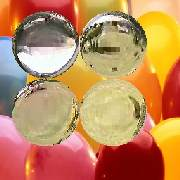

TransMarbles
Over Left Frame circular disks from Right Frame gradually expand to
reveal Right Frame.
due to magnification in the disks, effect will be as if viewing through glass marbles.
If drop is true the magnification in the discs vary from center to edges,
otherwise remain constant through.
All avisynth supported formats can be input.
RGB32, RGB24 YV12 and YUY2 colorspaces are supported by 2.5+ version.2.6 version supports all other planar formats as well.
Details of parameters
| Description |
Name |
Type |
Limits |
Default |
| Left clip |
|
clip |
|
none |
| Right clip |
|
clip |
|
none |
| Overlapping frames or seconds time |
overlap |
integer |
not more than clip length , >2 frames. If -ve taken as time in seconds |
none |
| maximum radius of discs |
radius |
integer |
>8 and less than frame diagonal/2 |
16 |
| magnification |
mag |
integer |
2 to 24 |
16 |
| is magnification as in drop? |
drop |
boolean |
true or false |
true |
#Usage examples:-
TransMarbles(Left, Right,-3,80,24,true)
TransMarbles(Left, Right,100,drop=false)
TransMarbles(Left, Right,-4,mag=8)
TransMarbles(Left, Right,100)
Images during transition :
|  |
 |
 |